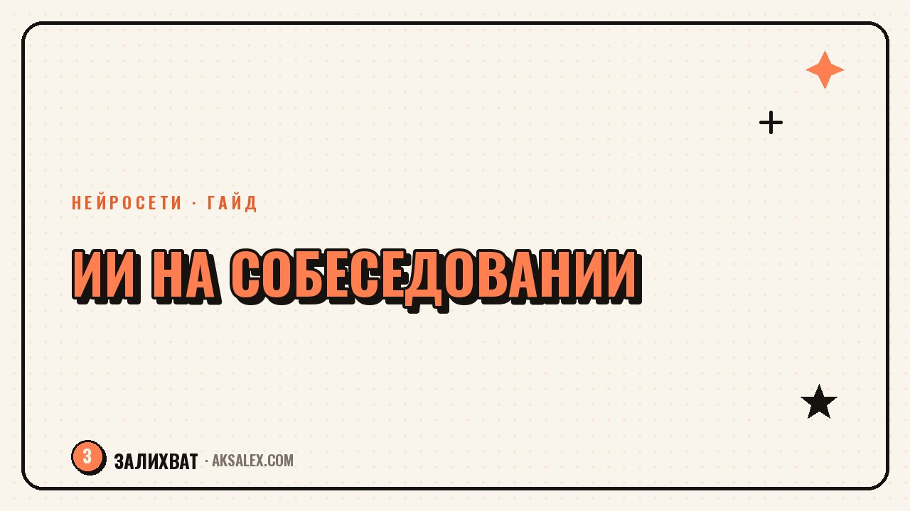

Нейросеть на собеседовании: как подготовиться

Собеседование пугает даже опытных специалистов: одно дело - знать свою работу, другое - за 40 минут внятно рассказать о ней незнакомому человеку. Нейросеть на собеседовании чаще всего используют не во время разговора, а до него - как тренажёр, который разбирает вакансию, придумывает вероятные вопросы и прогоняет с тобой ответы, пока они не станут звучать естественно. Расскажу, как выстроить такую подготовку по шагам и на что не стоит рассчитывать.
Зачем вообще готовиться с нейросетью
Собеседование - это не экзамен на знание фактов о себе, а короткий разговор, где нужно за минимуты выдать связную историю: кто ты, что умеешь и почему стоит взять именно тебя. Проблема в том, что мы редко формулируем это вслух заранее, а под стрессом даже понятные мысли рассыпаются на «ну, я в целом занимался разным». Нейросеть хороша тем, что не устаёт слушать одну и ту же историю по кругу и может честно сказать, где она звучит расплывчато.
Второй плюс - скорость. Разобрать вакансию, выписать вероятные вопросы и накидать структуру ответов вручную - час-полтора, если делать вдумчиво. С нейросетью тот же объём подготовки укладывается в 20-30 минут, а освободившееся время лучше потратить на живую репетицию вслух, а не на молчаливое чтение методичек.
Когда это особенно выручает
- Возвращение на рынок труда после паузы - декрет, смена сферы, переезд
- Собеседование на английском или другом неродном языке
- Технические роли, где нужно объяснять сложные вещи простым языком
- Мало времени на подготовку - вакансия и интервью в один день
Как разобрать вакансию и составить список вопросов
Первый шаг - не выдумывать вопросы из головы, а вытащить их из самого текста вакансии. Скопируй описание позиции и попроси нейросеть выделить ключевые требования и обязанности, а затем составить список вопросов, которые логично задать под каждый пункт. Так подготовка привязана к конкретной должности, а не к общим шаблонам из интернета.
Дальше добавь контекст о себе: резюме, пару абзацев о последнем месте работы, реальные задачи и результаты. Попроси нейросеть сопоставить твой опыт с требованиями вакансии и отметить, где связка очевидна, а где придётся объяснять её отдельно. Это и есть основа будущих ответов - не заученный текст, а понимание, какие твои факты отвечают на какие вопросы работодателя.
Рабочий промпт для разбора вакансии
«Вот текст вакансии [вставь] и моё резюме [вставь]. Составь список из 12-15 вероятных вопросов собеседования по этой позиции, раздели их на группы: про опыт, про навыки, про мотивацию и неудобные вопросы. Для каждого предложи, какие факты из моего резюме стоит упомянуть в ответе».
Отработка сложных и неудобных вопросов
Есть вопросы, которые многих ставят в тупик не потому, что на них нет ответа, а потому что формулировать его вслух неловко: почему уходишь с текущего места, какие ожидания по зарплате, в чём твои слабые стороны. Нейросеть удобно использовать именно для таких - попроси её сыграть роль рекрутера и задавать эти вопросы по одному, а свои ответы проговаривай вслух или печатай, как на настоящем интервью.
После каждого ответа попроси обратную связь: что звучит убедительно, а что похоже на оправдание. Отдельно попроси нейросеть придумать уточняющий вопрос, если бы она была придирчивым интервьюером - обычно именно такие уточнения и застают врасплох на реальном собеседовании, а тренировка снимает эффект неожиданности.
Частый совет рекрутеров: не ответ должен быть идеальным, а логика должна быть понятной - интервьюер прощает шероховатости в формулировках, но не прощает ощущение, что кандидат сам не понимает, чего хочет.
Три вопроса, которые стоит отрепетировать в первую очередь
- «Расскажи о себе» - твоя история за 60-90 секунд, а не пересказ всего резюме
- «Почему уходишь с текущего места» - без критики бывшего работодателя
- «Какие у тебя ожидания по зарплате» - с вилкой, а не одной цифрой
Какую нейросеть выбрать для подготовки
Для этой задачи подойдёт практически любая текстовая нейросеть, но они по-разному ведут себя в режиме диалога-собеседования и по-разному работают с русским языком. Ниже - сравнение по тем параметрам, которые важны именно для подготовки к интервью, а не для общих задач.
| Сервис | Бесплатный доступ | Русский язык | Роль интервьюера по ролям |
|---|---|---|---|
| ChatGPT | Есть, с ограничениями | Хорошо | Хорошо держит роль в диалоге |
| Claude | Есть, с ограничениями | Хорошо | Подробная обратная связь по ответам |
| YandexGPT (Алиса) | Есть | Отлично | Проще формулировки, меньше нюансов |
| GigaChat | Есть | Отлично | Базовый режим ролевой игры |
Если собеседование на английском, стоит сразу вести диалог с нейросетью на этом языке - так ты одновременно тренируешь и содержание ответов, и формулировки, и произношение, если проговариваешь их вслух.
Что не стоит делать нейросетью прямо во время собеседования
Соблазн подключить подсказки прямо на созвоне понятен, особенно на техническом интервью. Но это рискованная стратегия: пауза перед ответом, странная интонация чтения с экрана и несовпадение стиля устной и письменной речи считываются опытным интервьюером почти всегда. Если подмену заметят, доверие к кандидату теряется целиком, даже если остальная часть разговора прошла хорошо.
Более рабочий вариант - использовать нейросеть до и после встречи: до - для подготовки, после - чтобы разобрать, какие вопросы застали врасплох, и доработать ответы на них перед следующим собеседованием. Так подготовка накапливается от интервью к интервью, а не превращается в разовую шпаргалку.
Что можно делать без риска
- Готовить структуру ответов заранее, до звонка
- Разбирать вакансию и требования компании
- Формулировать вопросы, которые задашь сам в конце интервью
- Разбирать прошедшее собеседование и готовиться к следующему
Чек-лист подготовки за вечер до собеседования
Если время ограничено, не пытайся переработать весь опыт заново - сосредоточься на нескольких конкретных шагах, которые дают наибольший результат за наименьшее время.
- Разобрать вакансию и выписать 10-15 вероятных вопросов
- Сопоставить требования вакансии с реальными фактами из своего опыта
- Отрепетировать вслух ответ на «Расскажи о себе» и неудобные вопросы
- Подготовить 3-4 своих вопроса о команде, задачах и процессах
- Выспаться - уставший голос звучит неуверенно, даже при сильном тексте ответа
Частые вопросы
Можно ли использовать нейросеть прямо во время видеозвонка с рекрутером?
Технически можно, но риск того, что это будет заметно, высокий - пауза перед ответом и интонация чтения с экрана выдают подмену. Надёжнее использовать нейросеть до собеседования, а на самом созвоне опираться на уже отрепетированные ответы.
Какая нейросеть лучше подходит для подготовки на русском языке?
Для русскоязычного диалога хорошо работают YandexGPT и GigaChat, а для более гибкой ролевой игры интервьюера - ChatGPT и Claude. Разница не критична, выбирай тот сервис, которым уже пользуешься и к интерфейсу которого привык.
Сколько времени нужно закладывать на подготовку с нейросетью?
На разбор вакансии и составление списка вопросов уходит 15-20 минут, ещё 20-30 минут - на репетицию ответов вслух. В сумме полноценная подготовка занимает около часа, что вполне укладывается в один вечер перед интервью.
Заметит ли рекрутер, что я готовился с помощью нейросети?
Нет, если ты действительно проговорил и присвоил себе ответы, а не заучил их дословно. Подготовка с нейросетью ничем не отличается от подготовки с другом-репетитором - разница только в том, кто задавал тренировочные вопросы.
Стоит ли готовить ответы дословно и заучивать их наизусть?
Лучше выучить структуру и опорные факты, а не точные фразы - дословно заученный текст звучит неестественно и сбивается от малейшего уточняющего вопроса. Структура при этом держится и позволяет спокойно перестроить ответ на ходу.
а не вручную